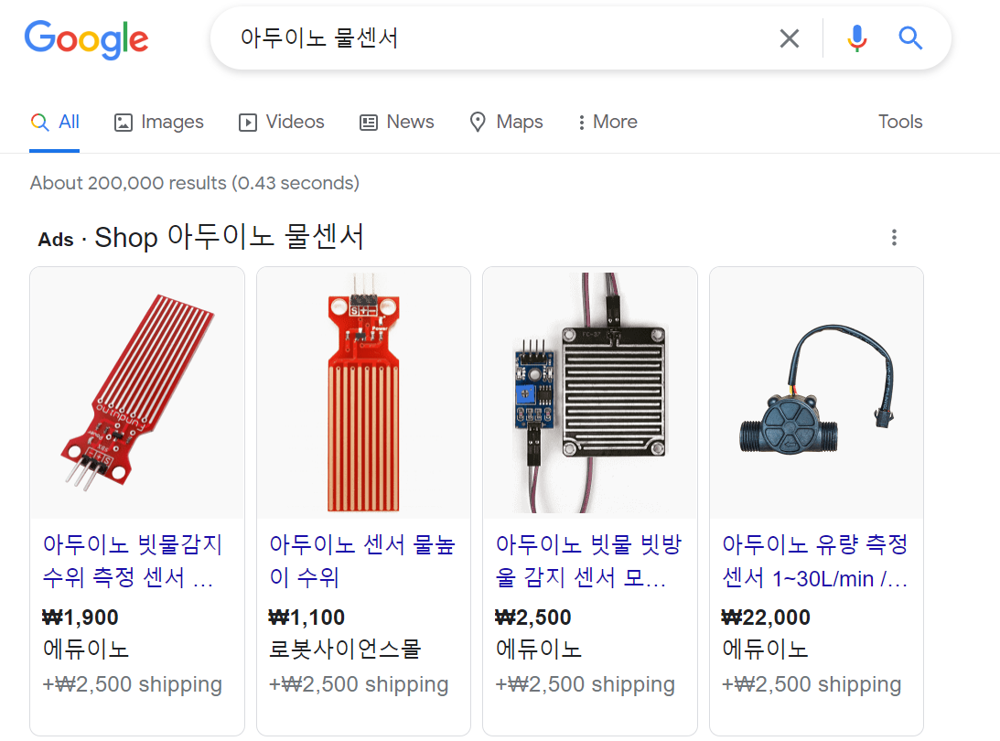
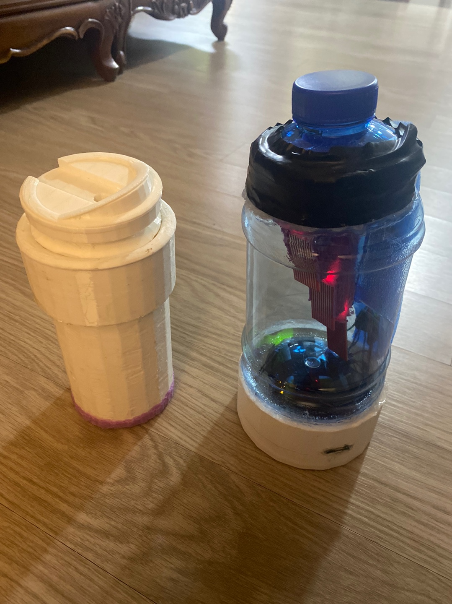

C언어는 따로 배우진 않았지만 하지만 아두이노 하면서 찍먹
아두이노는 C 언어를 쓰는 하드웨어 보드이다. 아두이노로는 정말 뭔가를 만들 수 있다. 수백가지의 아두이노 부품들을 활용해서 만들 수 있는 것은 무궁무진하다. 내가 활용해본 아두이노 부품들은 와이파이 모듈, 물 센서, 블루투스 모듈, 초음파 센서 등등이 있다. 무언가를 만들 때 어떤 부품이 그 기능을 가장 잘 해낼까 고민하는 과정은 꽤나 재밌다. 여러가지 부품을 사보고 어떤 게 작동하는지 시행착오를 다 거쳐봐야한다. 예를 들어 저번 메이커톤에서는 아두이노 물 센서로 받을 정보를 앱이나 파이어베이스로 옮기기 위해 애를 정말 많이 먹었다. 와이파이 모듈이나 블루투스 모듈은 아두이노에 그에 맞는 라이어버리를 연결하는데 그 것만 하는 것이 아니라 또 코드를 짜야하는 게 정말 많다. 어떻게 해야지 연결이 되는지 알아내기 위해 'arduino wifi to flutter', 'arduino bluetooth to flutter' 등의 검색어를 가지고 각 구글 4페이지까지는 하이퍼 링크가 모두 보라색이었던 기억이 난다(결국 연결 못해서 대회에서 시연할 때에는 연결까지는 못한 상태로만 보여드렸다ㅠ). 물 센서에도 시간이 엄청 들어갔다. 일반적으로 쓰는 물센서는 너무 짧아서 긴 물 센서를 쓰자니 비싸서 초음파 센서도 고려해보고 무게 센서도 생각해보고 난리도 아니였다(결국 물센서 여러 개 이어서 썼다).
3D 프린터도 쓰고, 과학영재관도 써보고, 무료로 쓸 수 있는 공공기관이라니 신기했다. 제품을 만들 때 고려해야 할 거는 정말 많았다. 특히 우리가 물병을 만드는 것이다보니 3D 프린트 필라멘트도 인체 무해성을 지닌 것을 하기 위해 노력했다. 뭔가를 만드는 데에는 정말 많은 생각들이 필요하다. 물병에 찬 물이 출렁거릴 때도 물 센서가 물 감소와 증가의 반복으로 계산되는 건가? 마시는 물병에 글루건을 써도 되는건가..?(이게 맞나) 앱에서 사용 만족도를 높이고 지속적인 사용을 이끌어 낼 수 있는 기능은 뭐가 있을까? 현재 시장에 이미 나와 있는 기능은 아닌가? 등등 수많은 질문들을 던지고 그에 대한 답을 찾거나 아니면 적어도 찾아나가려는 노력을 한다. 그 과정에서 인내심과 끝없는 호기심 그리고 정보서치 능력이 정말 많이 늘었다.
